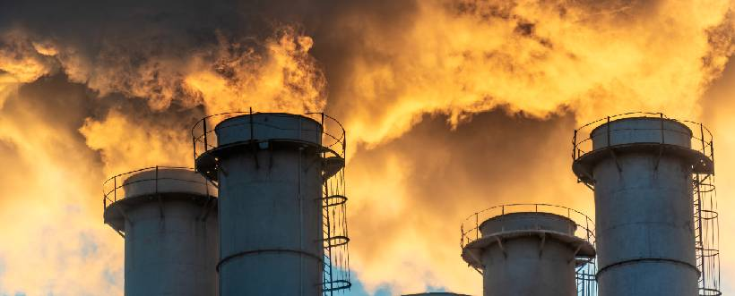

El Ciclo de Vida del Hardware
Los Residuos de Aparatos Eléctricos y Electrónicos (RAEE) no son basura convencional. Son una mezcla compleja de materiales de alto valor y sustancias altamente peligrosas. Su gestión comienza cuando un dispositivo se vuelve inútil y termina en plantas de tratamiento especializadas.

Minería Urbana: El Tesoro en la Basura
Se obtiene más oro de una tonelada de smartphones que de una tonelada de mineral extraído directamente de la tierra.
Contienen oro, plata y paladio. Su recuperación reduce la necesidad de minería destructiva.

Elementos como el neodimio son vitales pero escasos. El reciclaje es la única vía sostenible.

Reciclar aluminio ahorra hasta un 95% de la energía necesaria para producir material virgen.

Fundamentales para baterías. Su recuperación evita daños en ecosistemas sensibles.

Impacto Químico y Toxicidad
La lluvia filtra los metales hacia los acuíferos en un proceso llamado lixiviación.
| Componente | Ubicación | Impacto |
|---|---|---|
| Cadmio | Baterías y resistencias. | Afecta riñones y huesos. |
| Mercurio | Monitores planos. | Neurotóxico persistente. |
| Bario | Tubos CRT (Viejos). | Daños cardíacos. |
| Plomo | Soldaduras. | Afecta el desarrollo infantil. |
La Cara Oculta: Agua y Energía
- Agua: Un solo microchip requiere miles de litros de agua ultra pura.
- Energía: La producción de un portátil representa el 70-80% de su huella de carbono total.

Conclusión: Hacia una Tecnología Responsable
La gestión de los residuos informáticos es un imperativo ético. La solución requiere:
- Empresas: Ecodiseño y fin de la obsolescencia.
- Gobiernos: Leyes de "Derecho a Reparar".
- Usuarios: Consumo consciente (reparar antes de comprar).
"La innovación debe coexistir con los límites biológicos de nuestro planeta."